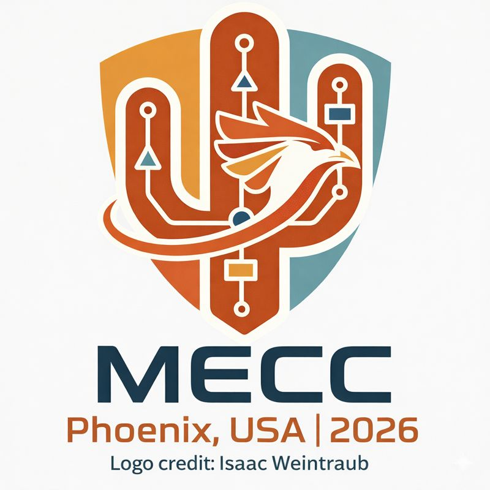
Sep. 2026
Congratulations to two members from our lab, Abel Molinar and Kumar Anurag, on receiving the MECC 2026 DSCD & AACC Student Travel Awards!


Awards, publications, talks, outreach, and other fun.

Congratulations to two members from our lab, Abel Molinar and Kumar Anurag, on receiving the MECC 2026 DSCD & AACC Student Travel Awards!
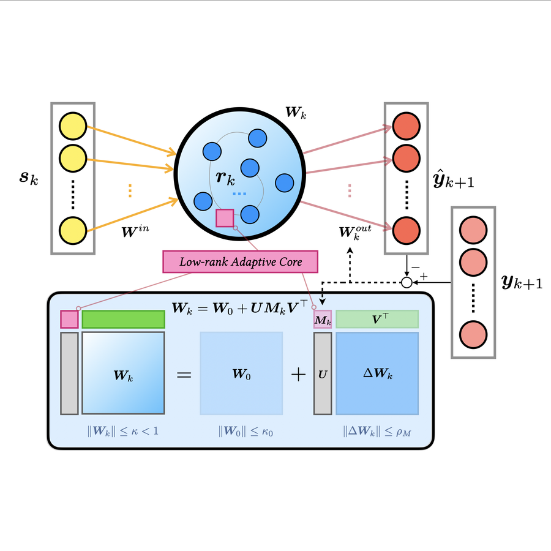
“LoRA-RC: Reservoir Computing with Low-Rank Adaptation” has been accepted at IEEE Control Systems Letters!
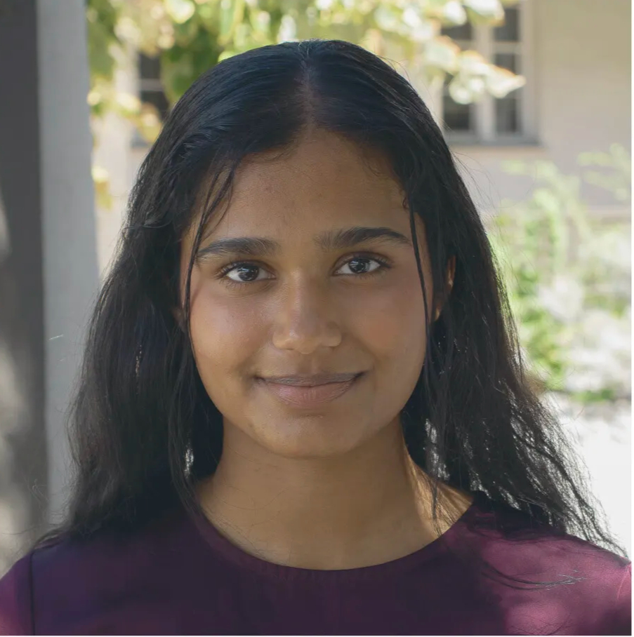
Congratulations to Haasika! She’s been selected as a 2026–2027 Society of Women Engineers (SWE) scholarship recipient and has been awarded the Motorola Solutions Foundation Scholarship!
Congratulations to Haasika Jagirapu on receiving the ESS Funded Research Award for Fall 1. The award recognizes her excellent research contributions as a member of the ONE Lab.
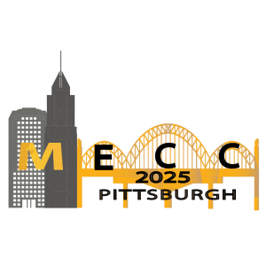
Congratulations to Kumar Anurag on receiving the Student Grant Award from the IFAC Modeling, Estimation and Control Conference (MECC 2025)!
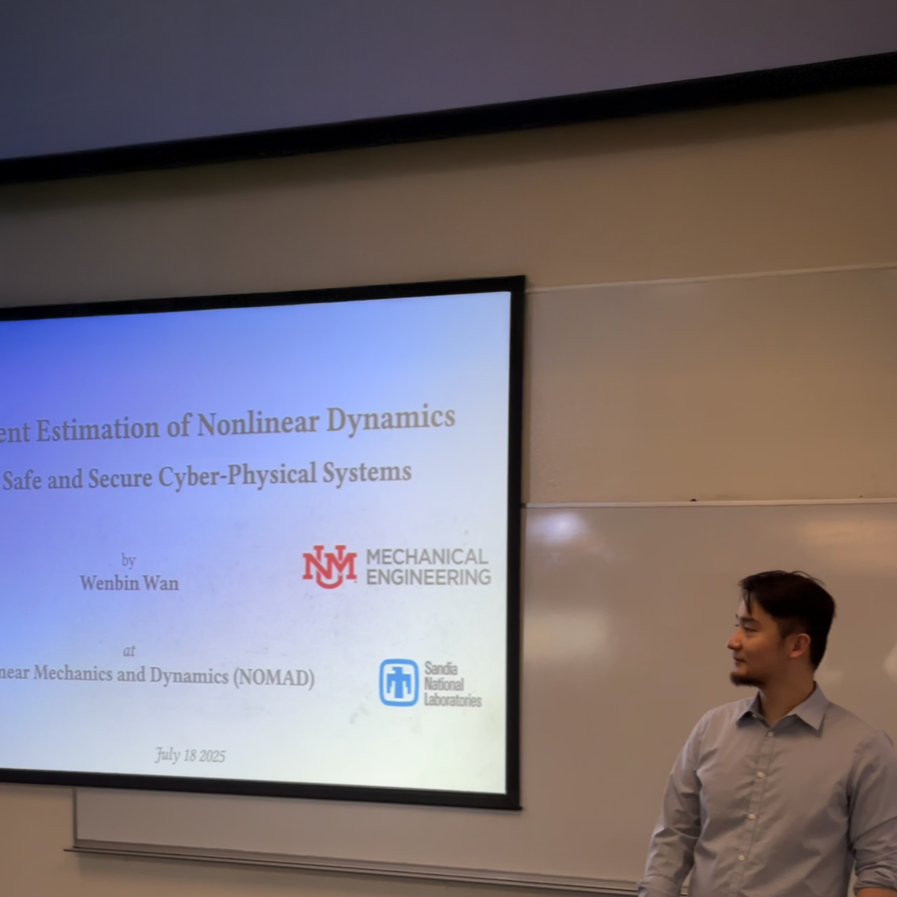
Professor Wan gave a tutorial talk at the Nonlinear Mechanics and Dynamics (NOMAD) workshop hosted by Sandia National Laboratories.
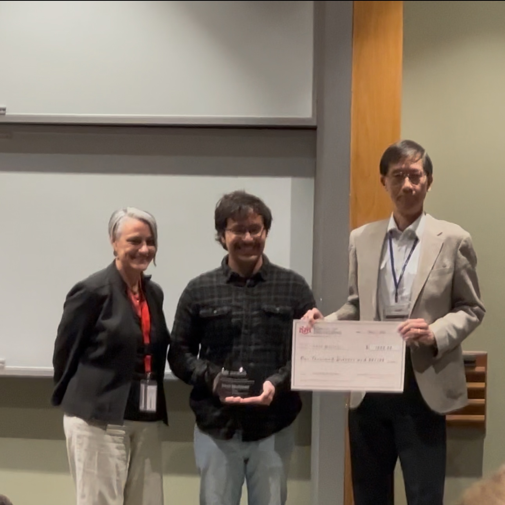
We are proud to share that Abel Molinar, a valued member of our lab, has been honored with the Outstanding Senior Award.
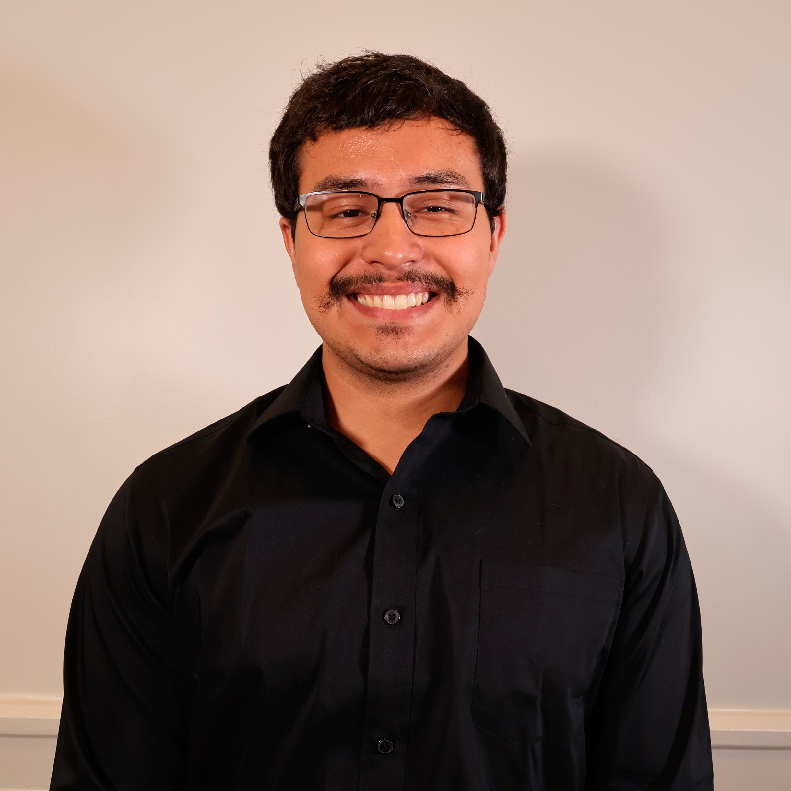
Congratulations to Abel Molinar on receiving the prestigious NSF Graduate Research Fellowship!
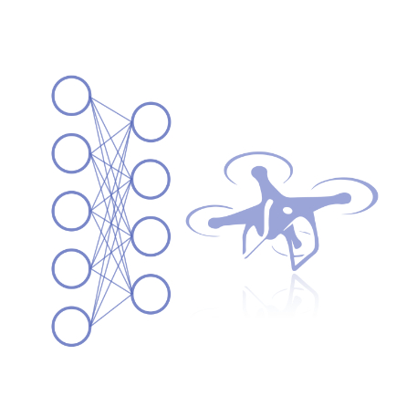
Dr. Wan was selected as a Teaching Allocation Grants awardee by the Center for Teaching & Learning for his course ME461/561 — Machine Learning for Aerospace, with the launch of the LoboLearn project.

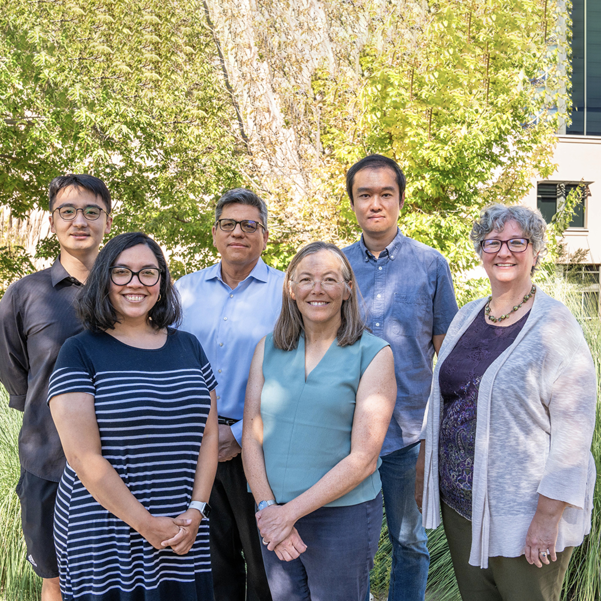
The NSF NRT program in autonomous systems engineering has launched. This $3 million award advances graduate education, transforming STEM graduate training to better prepare the next generation of innovators. RAISE fellow applications are now open.
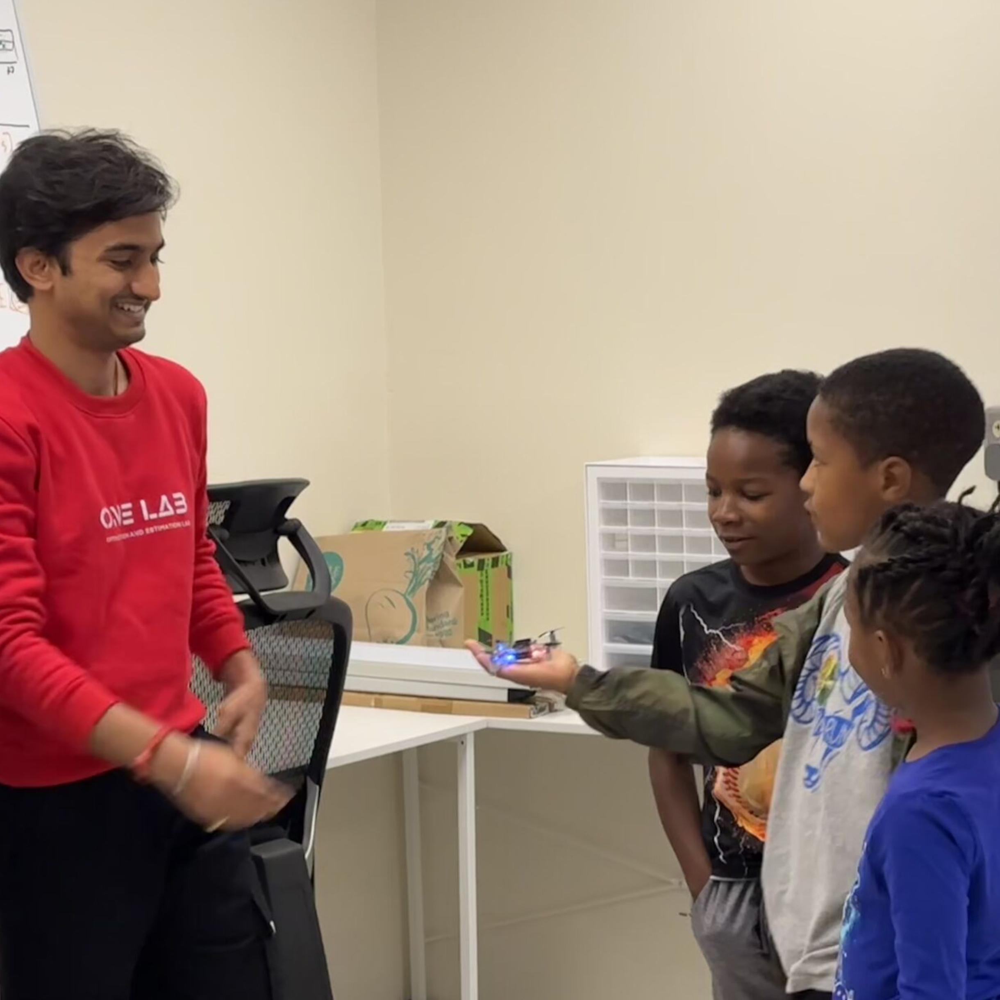
ONE Lab showcased UAVs and VR to ignite young minds at the SoE open house.
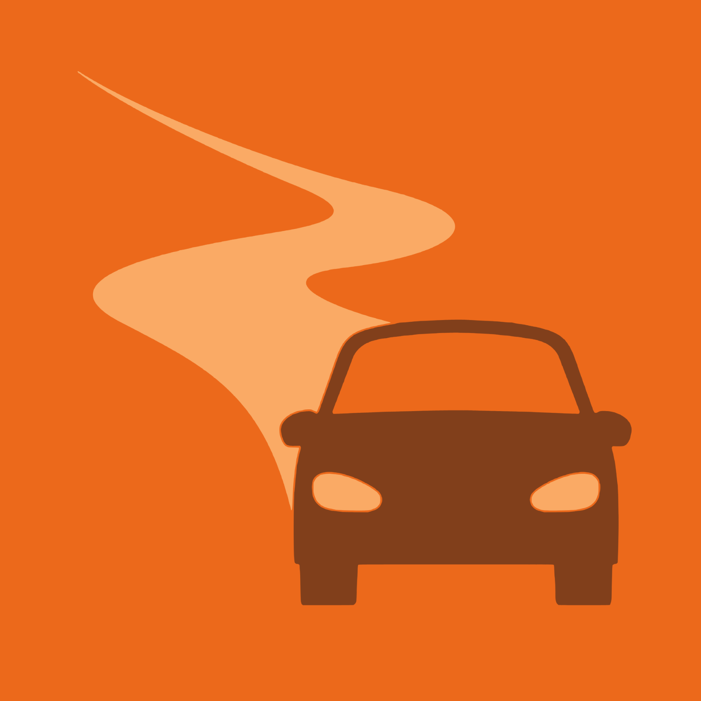
We invite you to submit your research to the special issue on “Intelligent Connected Vehicles” in the journal Vehicles.

Our RAC proposal “ADHESIVE: Autonomous Device-Human Engagement — Safety Perception In the VR Environment” was funded.
Congratulations! Abel Molinar was selected as a McNair scholar.
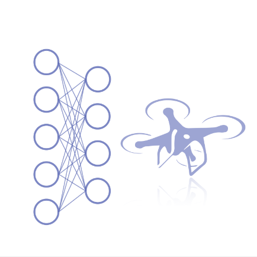
Congratulations! Wenbin Wan was selected as an SOE Teaching Innovation Fellow for teaching the course ML4A.

“Robust Vehicle Lane Keeping Control with Networked Proactive Adaptation” has been accepted at Artificial Intelligence (AIJ).
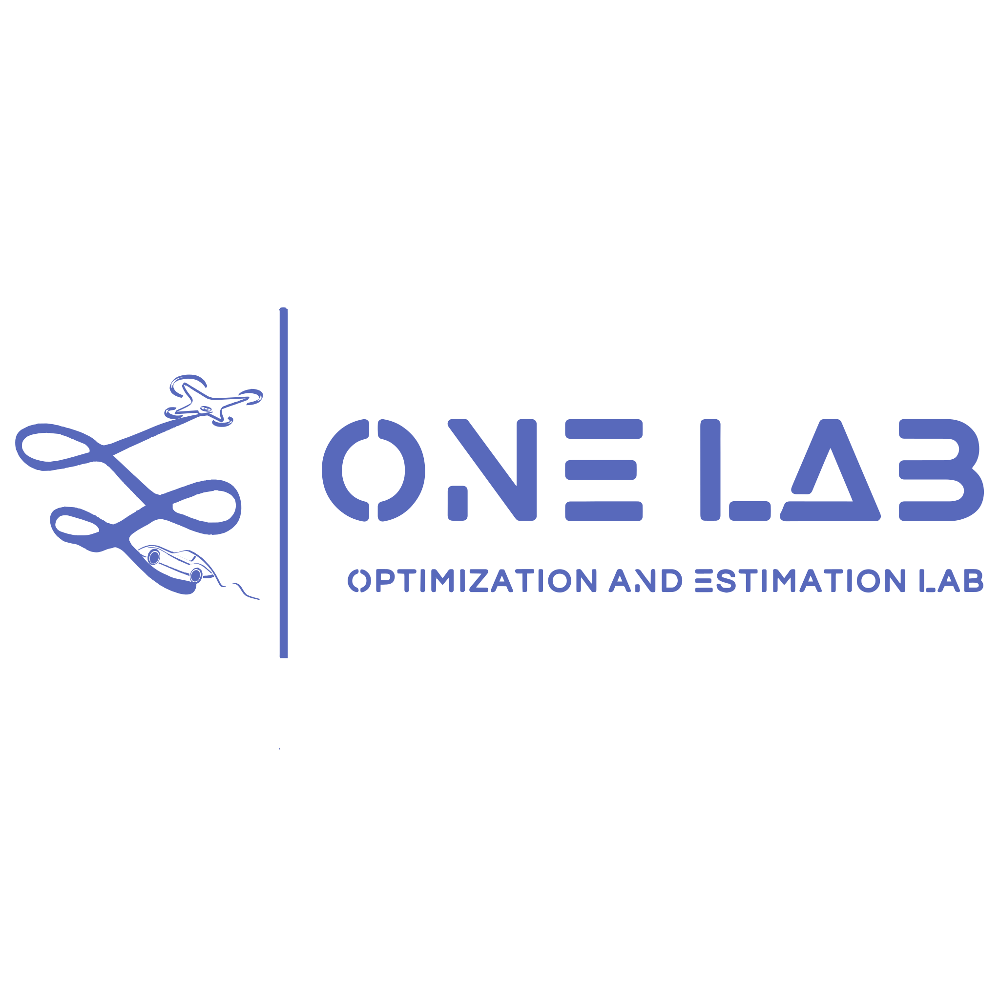
Multiple positions are available. See the FAQ if you are interested.
Our website is now available.